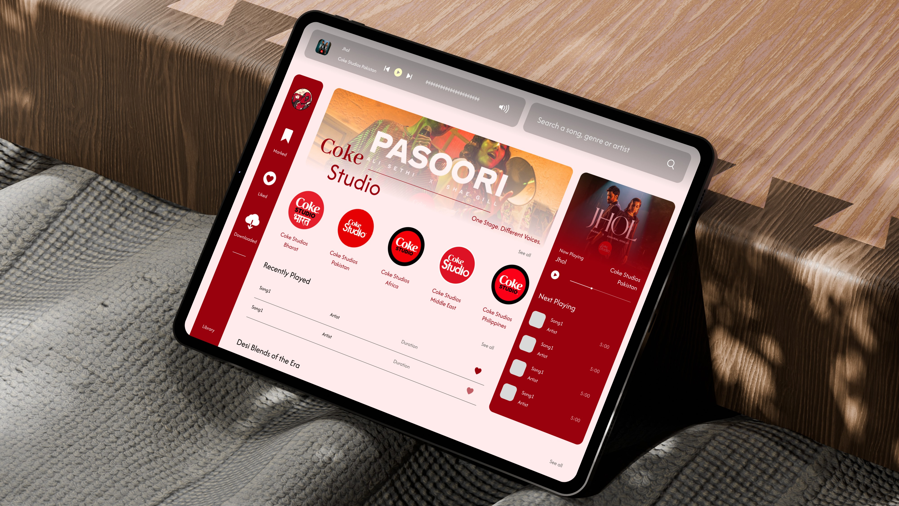
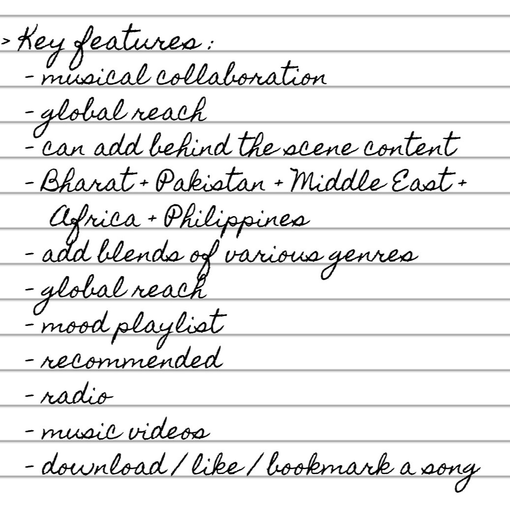
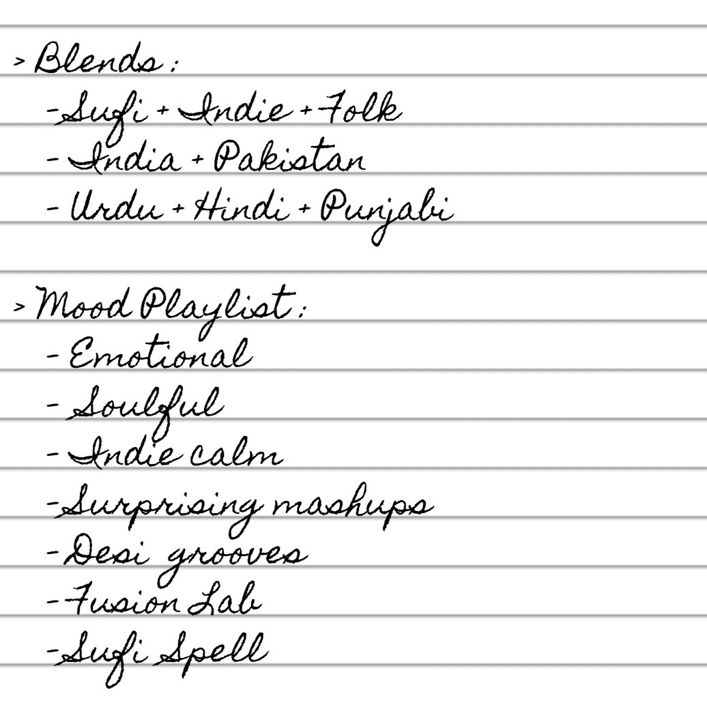
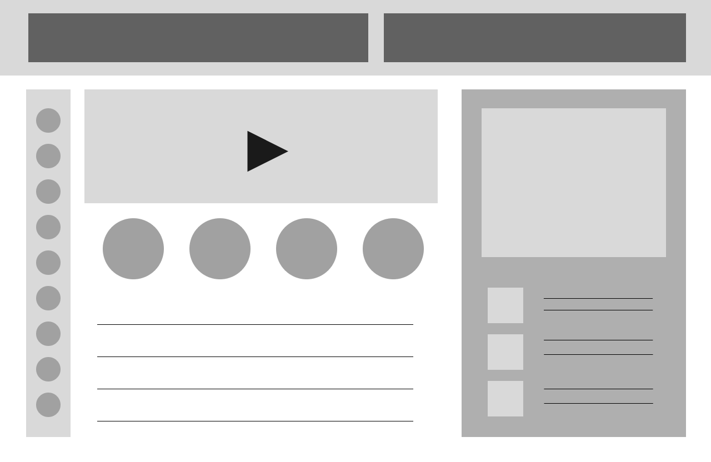
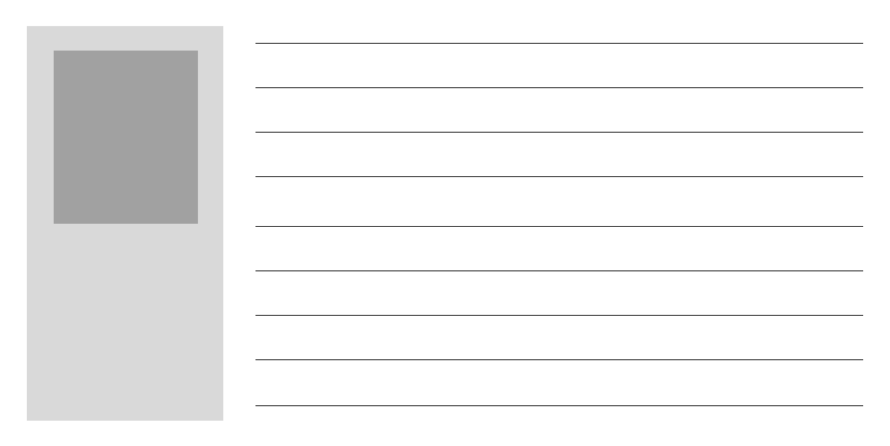
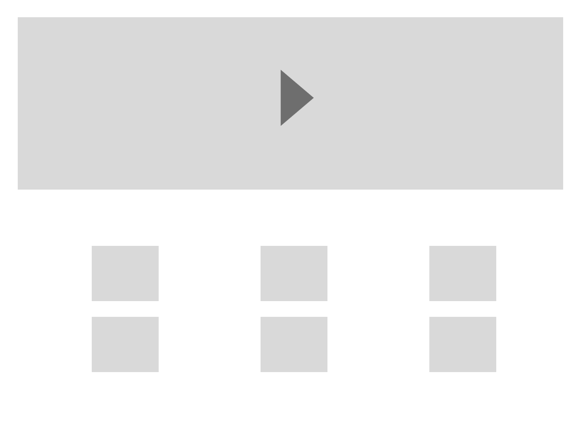

About:
Coke Studio is a music television series that brings together diverse musical artists, genres, and cultures to create unique live-recorded music performances. Originally launched in Pakistan in 2008 by Coca-Cola, it has since expanded to various countries, including India, Bangladesh, the Middle East, and Africa.
Problem Statement:
Coke Studio, despite its global impact and rich musical content, lacks a dedicated listening platform. This project addresses the gap by designing a unified interface that allows users to discover, explore, and experience Coke Studio’s music across regions and moods in one seamless space.
Project Background and Objective:
Coke Studio, despite its global popularity, lacks a centralized platform for listeners to explore its diverse musical content across regions. This project aimed to design a unified, immersive interface that brings together Coke Studio editions from India, Pakistan, and beyond—allowing users to discover music by mood, artist, and culture, while celebrating the fusion of tradition and modern sound in one seamless experience.
Inspiration
Brainstorming and Wireframing




